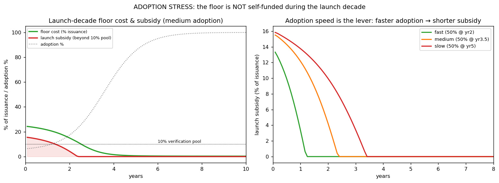
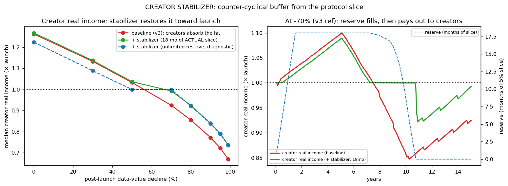

In plain language
Companion to RESULTS - Adoption & Creator Stabilizer. Companion added July 11, 2026 — the v1–v5-era runs predate the plain-language convention; written from the committed RESULTS as it stands today (including any verification-pass corrections already applied in that file), with no reinterpretation.
The question
Two follow-ups to the data-demand sweep, which showed the floor is funded by a 10% slice of the human-attention mint — and that a deep data collapse is paid for by creators, not the poor. So: (A) is the floor still self-funded during the thin launch decade, when the attention mint is smallest? And (B) can a formulaic mechanism take the commoditization hit off creators?
Part A — no, the launch decade is not self-funded
At launch the floor must cover about a quarter of all issuance (versus under 2% at maturity), exceeding the 10% pool by roughly 13–16%. The poor are protected the whole time — the 10th percentile holds at exactly 1.10× essentials throughout — so the only question is who funds the gap. Adoption speed is the dominant lever: reaching 50% adoption by year 2 instead of year 5 cuts the subsidy period from 3.4 years to 1.25. Minting the subsidy isn't inflationary (10-year inflation stays ~0%), but it quietly taxes creators by suppressing the creator mint; funding it externally — a launch treasury, founder reserve, or grant pool — is the clean choice. The recommendation: budget an explicit, time-boxed launch floor subsidy (≈10–16% of issuance, tapering over ~1–3 years), and have the white paper say "self-funded at maturity; the launch decade is subsidized" rather than implying self-funding from day one.
Part B — a creator stabilizer, with a correction on the record
A correction happened here. The July 2026 verification found a unit bug: the original run sized the reserve at ~8× what the spec actually provides, so its headline — full creator protection through a −70% data-value collapse — was wrong in both units and dynamics. The corrected results, from fixed code (old JSON archived as *_PRE-FIX_archive.json): banking the 5% protocol slice's surplus instead of burning it — an 18-month reserve, released flat per creator when the median dips below launch — fully holds creators only through a ~50% collapse. At −70% it cushions rather than holds: creator real income bottoms at 0.92× and ends at 0.99×, versus 0.85×/0.93× unstabilized. Nothing protects against −80% or worse (the reserve empties). Inflation cost stays negligible (0.02–0.17%/yr). The spec should state the honest claim — full protection to ~−50%, meaningful cushioning at −70% — or raise the cap (~36 months buys materially more).
The honest catch
The launch model's bootstrap leans on assumptions about real-world EVE acceptance and the launch money stock; a genuinely cold start sits outside what it captures well — the robust takeaway is the shape (a front-loaded floor deficit of ~15% of issuance for 1–3.5 years, shrinking with adoption speed), not the exact digits. Both mechanisms are formulaic and neither touches the poor (p10 at 1.10× in every run), but the stabilizer's cap and trigger are first-draft defaults meant to be argued with, and everything runs on the usual v1–v3 limits at N=25,000.
One line
The floor's self-funding is a maturity property, not a birthright — launch needs an external, time-boxed subsidy (~15% of issuance for 1–3.5 years, shrinking the faster adoption grows) — and the creator rainy-day reserve, honestly re-sized after a unit-bug correction, fully protects creators only through a ~50% data collapse and merely cushions a −70% one.
Words used here (added July 18, 2026 — plain-language house rule; the text above is unchanged). Mint / attention mint — newly created EVE; it comes only from verified live human engagement (attention), so the attention mint is the economy's money tap. Issuance — the flow of newly created money; subsidy sizes are quoted as shares of it. Floor — the guarantee that anyone can earn essentials through verified work (held at 1.10× throughout these runs). Self-funded — covered by the floor's own 10% slice of the mint with no extra money printed; the finding here is that this holds at maturity, not at launch. p10 / 10th percentile — the person poorer than 90% of people; the test's standing subject. Protocol slice — the 5% of every mint routed to system operations; its surplus is what the creator reserve banks. Median — the middle person: half earn more, half less; the stabilizer releases when the median creator dips below launch level. Commoditization — data becoming a cheap interchangeable bulk good; the collapse scenario the stabilizer exists for. Formulaic — run by a written rule, no committee or discretion. Money stock — all money in existence at once. Bootstrap — the cold-start phase where the system must grow using only what it generates itself. N=25,000 — the runs simulate 25,000 people.
Figures


Technical results
Two follow-ups to the data-demand sweep, which found the floor is funded by the 10% routing slice on the human-attention mint (not the data economy) and that a deep data collapse is paid for by creators, not the poor. This brief tests the two implications: (A) is the floor still self-funded during the thin launch decade, when the attention mint is smallest? and (B) a formulaic mechanism to take the commoditization hit off creators. Both reuse the v3 engine; files in this folder.
⚠️ REVISED — Part B corrected after the July 2026 verification (unit bug)
The original coded the reserve cap as 18 months of the c=1 reference mint's slice — ~8x the actual slice under the governor (c~0.13). The Part B headline below ("fully holds creators through a -70% collapse using ~12 of 18 reserve-months") was therefore wrong in both units and dynamics. Corrected results (fixed code; cap = 18 months of the actual trailing slice; JSON regenerated; old JSON archived as *_PRE-FIX_archive.json):
- An honestly-sized 18-month reserve fully holds creators only through a ~50% data-value collapse (released ~15 slice-months).
- At -70% (the v3 reference) it cushions rather than holds: creator real income minimum 0.92x, ending 0.99x (vs 0.85x/0.93x unstabilized). Cumulative release ~95 slice-months — the capped stock refills monthly from the ongoing 5% flow, which is why release can exceed the cap; full protection at -70% needs ~120 slice-months cumulative (unlimited-cap diagnostic).
- Nothing protects against >= -80% (reserve empties; as originally stated). Inflation cost remains negligible (0.02-0.17%/yr; bigger caps burn less, costing slightly more inflation).
Spec implication (v1.2 §6): state the honest claim — full protection to ~-50%, meaningful cushioning at -70% — or raise the cap (~36 months buys materially more). The mechanism works; the advertised strength assumed a reserve ~8x the spec. Part B prose below is preserved for the record and superseded by this section.
Part A — The floor is NOT self-funded during the launch decade
The question. Mature EDEN funds its floor from a 10% slice of a large attention mint. At launch the mint is tiny (few users, little to engage with) while the floor's obligation — keep everyone at 1.10× a real essentials basket — is full-size from day one. Does the floor still pay for itself?
Setup. Essentials are priced at mature / real-world value (a merchant prices bread by real cost, not relative to a 5%-adopted network's income), so thin-launch market incomes start far below the floor. Per-capita mint ramps 0.3→1.0 along an adoption S-curve; institutional data demand lags (scales with adoption¹·⁵). Same engine, criterion, and floor otherwise.
Findings.
| Adoption speed | Peak floor cost | Subsidy beyond the 10% pool | Years until self-funded | p10 held? | 10-yr inflation |
|---|---|---|---|---|---|
| Fast (50% by yr 2) | 22.5% | 13.3% | 1.25 yr | yes, 1.10× | ~0% |
| Medium (50% by yr 3.5) | 24.3% | 15.5% | 2.4 yr | yes, 1.10× | ~0% |
| Slow (50% by yr 5) | 24.5% | 15.8% | 3.4 yr | yes, 1.10× | ~0% |
- At launch the floor must cover ~a quarter of all issuance (vs <2% mature), exceeding the 10% verification pool by ~13–16%. So the "self-funded" property is a mature-state property; the launch decade runs at a deficit that closes only as adoption scales.
- The poor are protected the whole time — the p10 sits at exactly 1.10× throughout. The floor delivers; the only question is who funds the gap.
- Adoption speed is the dominant lever. Reaching 50% adoption at year 2 vs year 5 cuts the subsidy period from 3.4 years to 1.25. This is a direct, quantified argument for the awareness-and-onboarding flywheel (EdenQuest): getting to scale fast isn't just growth, it shrinks the launch subsidy.
- Funding it by minting is not inflationary — even with a thin 6-month launch money stock, the governor absorbs the top-up minting (10-yr inflation stays ~0%). But it absorbs it by suppressing the creator mint, so minting the subsidy quietly taxes creators during launch. Funding the subsidy externally (a launch treasury / founder reserve / grant pool) protects creators and is the clean choice.
Honest caveat. The "non-inflationary minting" result leans on the launch money stock being sizeable relative to the subsidy. A genuinely cold start (almost no EVE in existence) is outside what this model captures well, and the real bootstrap also depends on EVE's external acceptance — which is an adoption question, not a monetary one. The robust takeaway is the shape: a front-loaded floor deficit of ~15% of issuance for 1–3.5 years, shrinking with adoption speed.
What to do with it. Budget an explicit, time-boxed launch floor subsidy (≈10–16% of issuance, tapering over ~1–3 years), funded externally, and treat adoption velocity as a first-class monetary parameter. Put "the floor is self-funded at maturity; the launch decade is subsidized" in the white paper rather than implying self-funding from day one.
Part B — A creator stabilizer that shares the commoditization burden
The question. Under a deep data-value collapse, v3 holds the poor at 1.10× but lets median creator real income fall (0.92× at −70%, down to 0.67× at −99%). Can a formulaic mechanism share that hit?
The mechanism (no committee, no new minting). In the v1.0 spec the 5% protocol slice's surplus is burned. Replace "burn" with bank-then-release:
- Bank the slice in a reserve (capped at 18 months of the slice); burn only the overflow. The reserve is simply deferred burning.
- Trigger: when median creator real income dips below its launch level, release from the reserve, flat per creator (progressive — it lifts the median, not the whales), enough to restore the median toward launch.
- The release is exempt from the governor's issuance target (it's recycled deferred-burn, not new mint), so the governor doesn't claw it back by cutting the creator mint.
Findings.
| Data-value decline | Creator real income, baseline | + Stabilizer | Reserve left | Inflation cost | p10 |
|---|---|---|---|---|---|
| −30% | 1.13 | 1.13 (min held at 1.0) | full | +0.04 pp | 1.10 |
| −50% | 1.03 (min 0.96) | 1.01 (min 1.0) | full | +0.05 pp | 1.10 |
| −70% (v3 ref) | 0.93 (min 0.85) | 1.00 (min 1.0) | 6 mo | +0.08 pp | 1.10 |
| −80% | 0.86 | 0.92 | empty | +0.09 pp | 1.10 |
| −90% | 0.77 | 0.84 | empty | +0.11 pp | 1.10 |
| −99% | 0.67 | 0.74 | empty | +0.12 pp | 1.10 |
- It fully protects creators up to a ~70% collapse — median creator real income never drops below its launch level, using about 12 of the reserve's 18 months. That covers v3's reference commoditization case with margin.
- It substantially cushions deeper collapses (e.g., −90%: 0.84 vs 0.77) but the finite reserve can't fully offset a permanent ≥80% regime change — as it shouldn't, since printing into a permanent collapse would just inflate.
- It's essentially free and harms no one. Inflation rises only from ~0.02% to ~0.1%/yr; the p10 and the floor's self-funding are untouched (top-up minting stays 0). It taxes neither the poor nor top creators — it's funded entirely by deferring burns from good years into bad ones.
Honest limits & knobs. The reserve cap (18 months) and the release sizing are tunable; a bigger cap buffers deeper/longer collapses at the cost of less burning (slightly more inflation). For a permanent deep collapse the right answer isn't a bigger buffer but the freshness-decay already in the spec — it redirects value to new creation, i.e., it nudges creators to adapt rather than be subsidized indefinitely. The stabilizer is shock insurance, not a pension.
What to do with it. Adopt it as a low-risk change to the protocol slice: "burn the surplus" → "bank the surplus, release to creators when their real income dips below launch, burn the overflow." It converts a static sink into a counter-cyclical creator buffer for near-zero cost.
What the two together say
The data-demand sweep reframed EDEN's safety net as coupled to the attention mint. These two runs trace that coupling to its two real consequences and show both are manageable:
- At launch, when the mint is small, the floor needs a temporary external subsidy — bounded (~15% of issuance), short (1–3.5 yr), and shrinking the faster you grow.
- Under commoditization, when data income collapses, the burden falls on creators — and a near-free counter-cyclical reserve can absorb it up to a severe (70%) collapse.
Neither touches the poor (the p10 holds at 1.10× in every run here), and neither requires discretion — both are formulaic. They turn two open risks from the earlier brief into specified, tested mechanisms.
Caveats
Same structural limits as v1–v3 (quantity-theory pricing, no behavioral feedback, no fraud, fixed population, single 15-year horizon), run at N=25,000 for speed. The adoption model's bootstrap depends on assumptions about real-world EVE acceptance and launch money stock that sit partly outside the model. The stabilizer's reserve cap and trigger are first-draft defaults meant to be argued with. All findings are existence/robustness demonstrations under stated assumptions, not forecasts.
Files
adoption_sim.py— launch-decade stress (real-anchor pricing, adoption S-curve, external vs minted subsidy, money-stock sensitivity)fig_adoption.png— launch subsidy size/duration; adoption speed as the levercreator_stabilizer_sim.py— counter-cyclical reserve mechanism over the commoditization sweepfig_creator_stabilizer.png— creator real income restored; reserve fill-and-release pathresults_adoption.json,results_creator_stabilizer.json— all rows
Raw data
⬇ results_adoption.json⬇ results_creator_stabilizer.json⬇ results_creator_stabilizer_PRE-FIX_archive.json